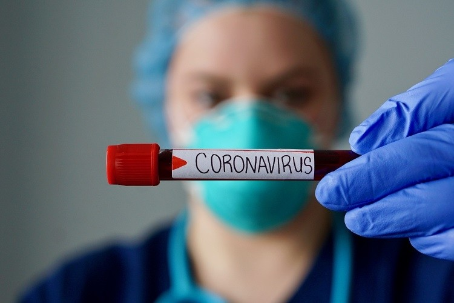

Treatments for Covid-19
What helps ,what doesn't ,and what's in the pipeline
Most people who become ill with COVID-19 will be able to recover at home. No specific treatments for COVID-19 exist right now. But some of the same things you do to feel better if you have the flu — getting enough rest, staying well hydrated, and taking medications to relieve fever and aches and pains — also help with COVID-19.
In the meantime, scientists are working hard to develop effective treatments. Therapies that are under investigation include drugs that have been used to treat malaria and autoimmune diseases; antiviral drugs that were developed for other viruses, and antibodies from people who have recovered from COVID-19.
What is convalescent plasma? How could it help people with COVID-19?
When people recover from COVID-19, their blood contains antibodies that their bodies produced to fight the coronavirus and help them get well. Antibodies are found in plasma, a component of blood.
Convalescent plasma — literally plasma from recovered patients — has been used for more than 100 years to treat a variety of illnesses from measles to polio, chickenpox, and SARS. In the current situation, antibody-containing plasma from a recovered patient is given by transfusion to a patient who is suffering from COVID-19. The donor antibodies help the patient fight the illness, possibly shortening the length or reducing the severity of the disease.
On March 24th, the FDA began allowing convalescent plasma to be used in patients with serious or immediately life-threatening COVID-19 infections. This treatment is still considered experimental.
Who can donate plasma for COVID-19?
In order to donate plasma, a person must meet several criteria. They have to have tested positive for COVID-19, recovered, have no symptoms for 14 days, currently test negative for COVID-19, and have high enough antibody levels in their plasma. A donor and patient must also have compatible blood types. Once plasma is donated, it is screened for other infectious diseases, such as HIV.
Each donor produces enough plasma to treat one to three patients. Donating plasma should not weaken the donor's immune system nor make the donor more susceptible to getting reinfected with the virus.

Is there an antiviral treatment for COVID-19?
Currently there is no specific antiviral treatment for COVID-19.
However, drugs previously developed to treat other viral infections are being tested to see if they might also be effective against the virus that causes COVID-19.
Why is it so difficult to develop treatments for viral illnesses?
An antiviral drug must be able to target the specific part of a virus's life cycle that is necessary for it to reproduce. In addition, an antiviral drug must be able to kill a virus without killing the human cell it occupies. And viruses are highly adaptive. Because they reproduce so rapidly, they have plenty of opportunity to mutate (change their genetic information) with each new generation, potentially developing resistance to whatever drugs or vaccines we develop.
What treatments are available to treat coronavirus?
Currently there is no specific antiviral treatment for COVID-19. However, similar to treatment of any viral infection, these measures can help:
- While you don't need to stay in bed, you should get plenty of rest.
Stay well hydrated.
- To reduce fever and ease aches and pains, take acetaminophen. Be sure to follow directions. If you are taking any combination cold or flu medicine, keep track of all the ingredients and the doses. For acetaminophen, the total daily dose from all products should not exceed 3,000 milligrams.
Is it safe to take ibuprofen to treat symptoms of COVID-19?
Some French doctors advise against using ibuprofen (Motrin, Advil, many generic versions) for COVID-19 symptoms based on reports of otherwise healthy people with confirmed COVID-19 who were taking an NSAID for symptom relief and developed a severe illness, especially pneumonia. These are only observations and not based on scientific studies.
The WHO initially recommended using acetaminophen instead of ibuprofen to help reduce fever and aches and pains related to this coronavirus infection, but now states that either acetaminophen or ibuprofen can be used. Rapid changes in recommendations create uncertainty. Since some doctors remain concerned about NSAIDs, it still seems prudent to choose acetaminophen first, with a total dose not exceeding 3,000 milligrams per day.
Are chloroquine/hydroxychloroquine and azithromycin safe and effective for treating COVID-19?
Early reports from China and France suggested that patients with severe symptoms of COVID-19 improved more quickly when given chloroquine or hydroxychloroquine. Some doctors were using a combination of hydroxychloroquine and azithromycin with some positive effects.
Hydroxychloroquine and chloroquine are primarily used to treat malaria and several inflammatory diseases, including lupus and rheumatoid arthritis. Azithromycin is a commonly prescribed antibiotic for strep throat and bacterial pneumonia. Both drugs are inexpensive and readily available.<
Hydroxychloroquine and chloroquine have been shown to kill the COVID-19 virus in the laboratory dish. The drugs appear to work through two mechanisms. First, they make it harder for the virus to attach itself to the cell, inhibiting the virus from entering the cell and multiplying within it. Second, if the virus does manage to get inside the cell, the drugs kill it before it can multiply.
Is the antiviral drug remdesivir effective for treating COVID-19?
Scientists all over the world are testing whether drugs previously developed to treat other viral infections might also be effective against the new coronavirus that causes COVID-19.
One drug that has received a lot of attention is the antiviral drug remdesivir. That's because the coronavirus that causes COVID-19 is similar to the coronaviruses that caused the diseases SARS and MERS — and evidence from laboratory and animal studies suggests that remdesivir may help limit the reproduction and spread of these viruses in the body. In particular, there is a critical part of all three viruses that can be targeted by drugs. That critical part, which makes an important enzyme that the virus needs to reproduce, is virtually identical in all three coronaviruses; drugs like remdesivir that successfully hit that target in the viruses that cause SARS and MERS are likely to work against the COVID-19 virus.